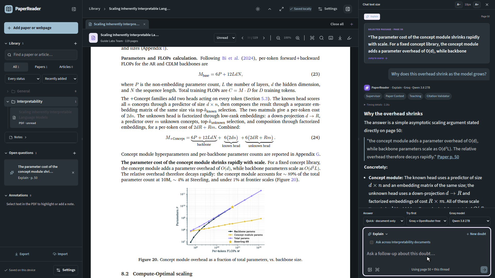
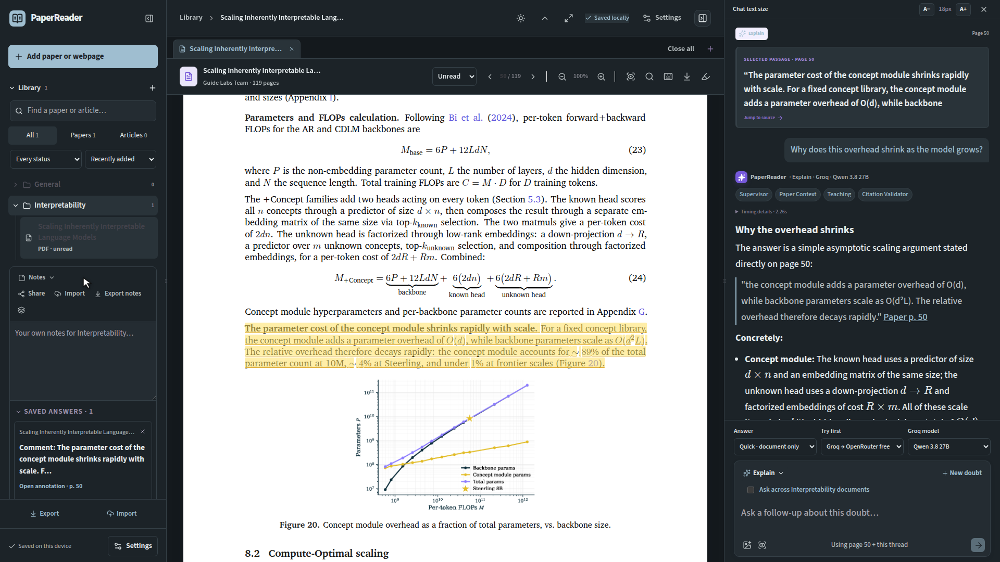

Linux
AppImage for Ubuntu and other Linux distributions. Make it executable, then open it.
Download AppImageDownload .debFor the paper you actually want to understand.
Stuck on a passage? Select it and ask AI right beside the page. Follow up, make a note, and keep reading without jumping to another chat.
Download PaperReaderFree & open source · Linux, Windows & macOS
Bring your own API key or connect a local model.

See it working
Open a PDF, arXiv paper, or blog. Select what’s unclear, ask a question, and keep useful explanations with your notes.
45 seconds · Real app footage · No audio needed
Built for reading deeply
From a single confusing equation to a folder of related papers, keep everything together on your computer.

Local library. Your choice of AI.
No PaperReader account or subscription. Your library, chats, annotations, and notes are saved locally.
When you ask AI, your question and relevant text or attached images go to the provider you choose. Use Groq, OpenRouter, or an OpenAI-compatible API, including a local model.
The app is free. Provider pricing, privacy policies, and rate limits still apply. Reading and annotation work without AI.
Ready when you are
v0.4.31 · MIT license
Install the app, then add your AI provider in Settings.
AppImage for Ubuntu and other Linux distributions. Make it executable, then open it.
Download AppImageDownload .debRun the installer and open PaperReader from your apps.
Download for WindowsOpen the disk image and drag PaperReader to Applications.
Download for Apple SiliconDownload for Intel MacmacOS builds are unsigned; you may need to allow the app in Privacy & Security. All release files · Setup instructions